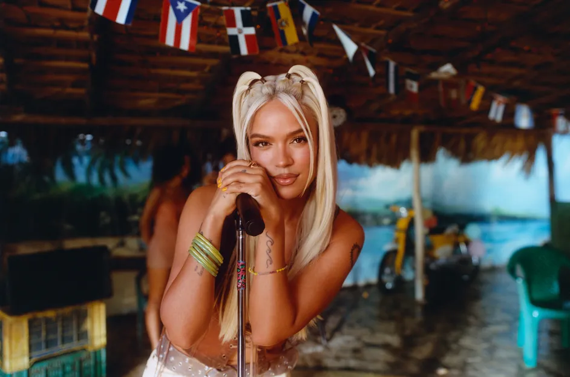

Bad Bunny
BiografÃa: Benito Antonio MartÃnez Ocasio, conocido como Bad Bunny, fusiona reguetón, trap, punk y electrónica.
Carrera: Éxito global con álbumes como YHLQMDLG y El Último Tour Del Mundo.
Estilo Musical: Reguetón, trap, rock, pop.
Premios: Latin Grammy, Billboard Music Awards.
Colaboraciones: Drake, Karol G, J Balvin, The Weeknd.
Karol G
BiografÃa: Karol G ha roto barreras en el reguetón femenino.
Carrera: Éxitos como Tusa, Bichota, Ay Dios MÃo.
Estilo Musical: Reguetón, pop, trap.
Premios: Billboard Latin Music Awards, Premios Juventud.
Colaboraciones: Nicki Minaj, Anuel AA, Shakira.
J Balvin
.webp)
BiografÃa: J Balvin ha popularizado el reguetón a nivel global.
Carrera: Ãlbumes como Vibras y Colores.
Estilo Musical: Reguetón, pop, electrónica.
Premios: Latin Grammy, Premios Billboard.
Colaboraciones: Bad Bunny, Cardi B, Luis Fonsi.
Feid

BiografÃa: Feid destaca con un estilo fresco y melódico.
Carrera: Canciones como Porfa y Baila Conmigo.
Estilo Musical: Reguetón melódico con toques tropicales.
Premios: Premios Billboard Latin Music, Premios Juventud.
Colaboraciones: Karol G, J Balvin, Rauw Alejandro.
ğŸ–¼ï¸ GalerÃa de Artistas